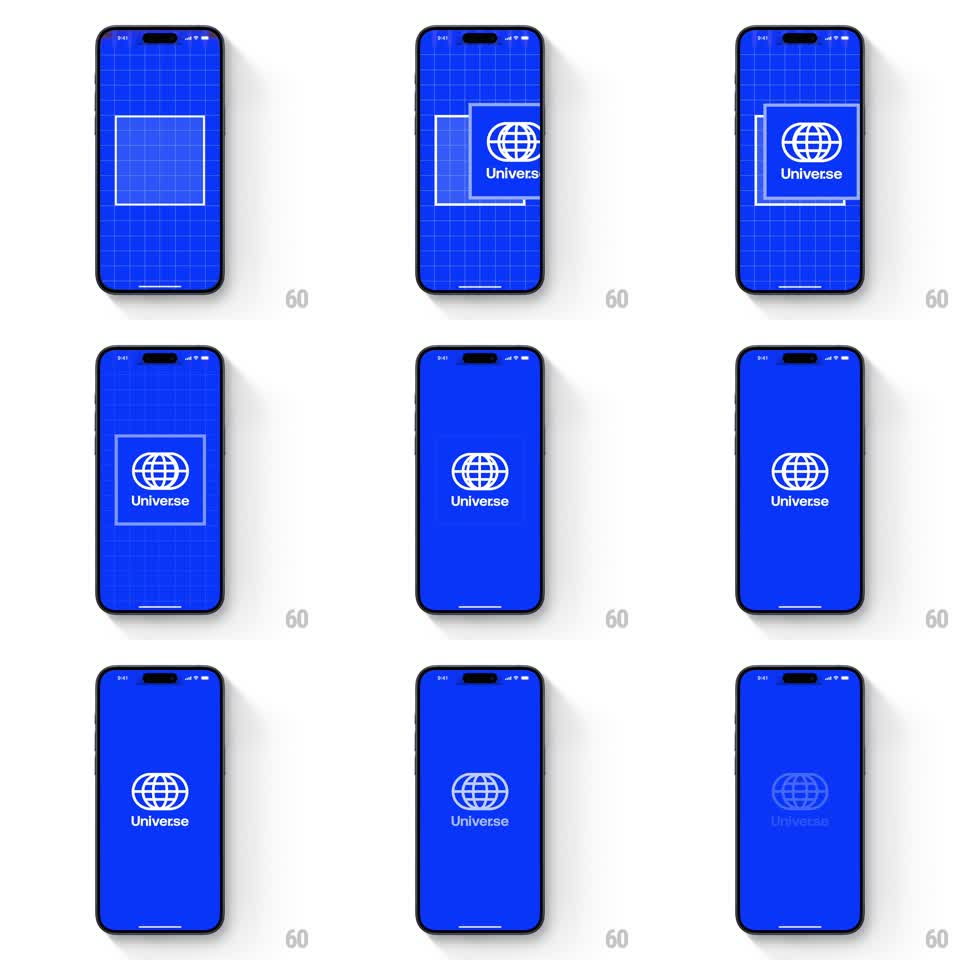

Media
Frame-by-frame

Rebuild this animation 1:1: Universe's splash - a blueprint grid stage where a white square frame draws itself around the globe logo, then the grid dissolves to solid blue before the logo itself fades.

Rebuild this animation 1:1: Universe's splash - a blueprint grid stage where a white square frame draws itself around the globe logo, then the grid dissolves to solid blue before the logo itself fades. ## Integration Integration: stack-agnostic spec - springs given as stiffness/damping, timed motions as duration + curve; map every value to your framework and animation library of choice. ## Scene A saturated blue screen covered in a faint white blueprint grid. Center stage: the Universe wireframe globe with its wordmark. Around it, a white square frame draws in from corner brackets into a full outline, then the grid fades away leaving flat blue, and finally the logo dissolves. ## Motion spec Pattern: multi-stage construct-and-dissolve reveal. - Stage 1 (0-600ms): the blueprint grid is fully visible; a white square outline draws itself clockwise from a corner (stroke-dash draw, 500ms, ease-in-out). - Stage 2 (600ms-1.2s): the globe logo + wordmark fade/scale in inside the frame (opacity 0 to 1, scale 0.96 to 1, 350ms); the frame's corner brackets settle into a clean rectangle. - Stage 3 (1.2-1.8s): the grid lines fade out row by row from the edges inward (opacity to 0, 400ms, 30ms stagger per line band), leaving solid blue; the square frame fades with them. - Stage 4 (1.8-2.3s): the logo holds alone on flat blue, then dissolves (opacity to 0 with a slight scale to 1.04, 400ms, ease-in) as the app fades in beneath. ## Calibration - The grid is faint (white at ~12% opacity) - a blueprint, not graph paper. - Each stage fully owns its time slice; no overlapping fades between stages 1 and 2. ## Reduced motion Skip grid draw; logo fades in on solid blue, then out. ## Don't miss - The square frame draws as a stroke, it does not fade in whole - the construction feel is the brand. - Blue is the exact Universe electric blue; the grid and logo are pure white.